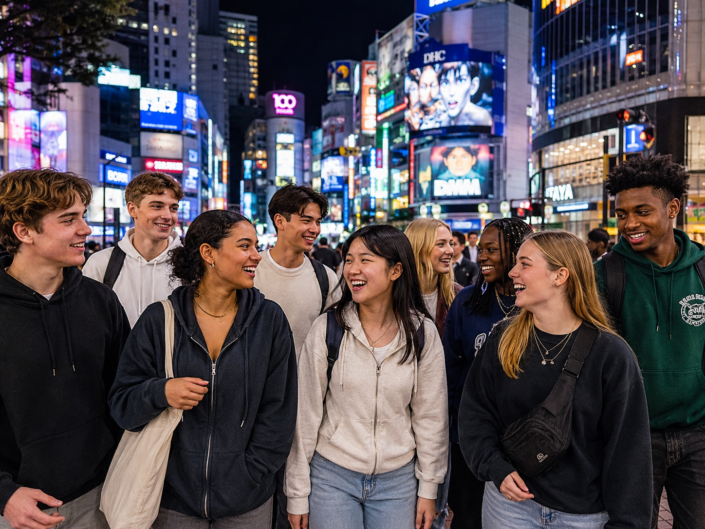

Welcome Back
Maya, what stayed with you?
Choose a moment that stayed with you. Put what you noticed into your own words, then connect it to class, family, or the next group.

1Choose a moment
2Explain what you learned
3Choose where to use it
Your group experience
The moments your group shared.
Photos, clips, and stories from your Japan tour—saved in one place before you turn them into reflection.
Reflection organizer
Build your learning summary.
1
Choose one moment
2
What did you learn?
3
Where will you use it?
✦AI organizes your words. It does not invent a learning claim or publish anything automatically.